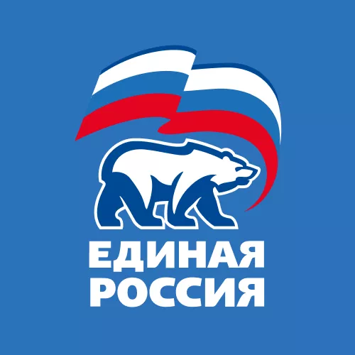
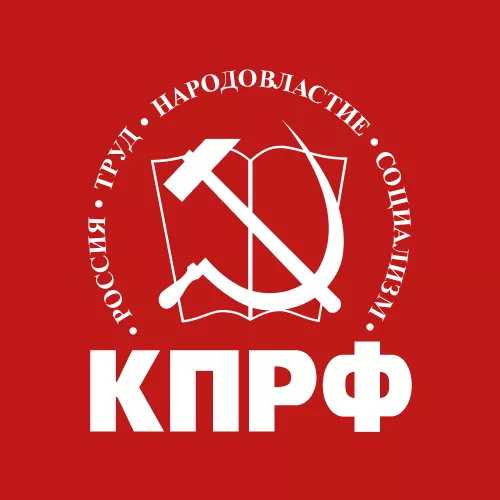
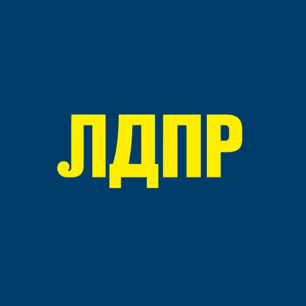
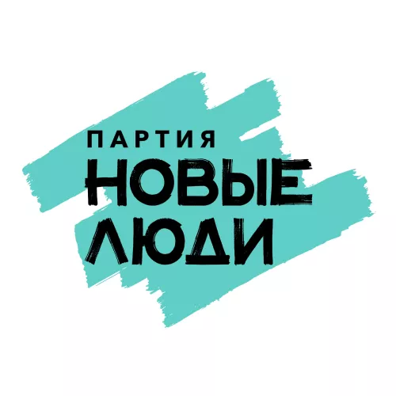
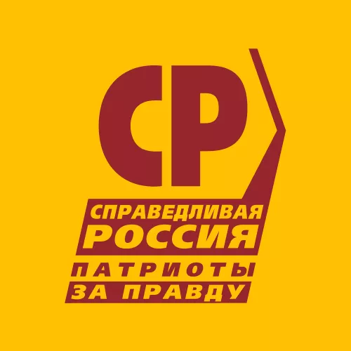
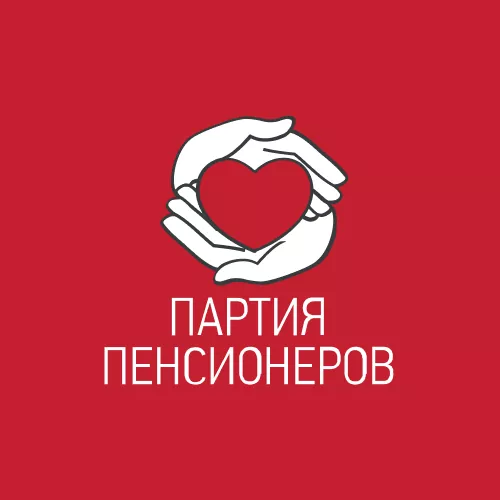
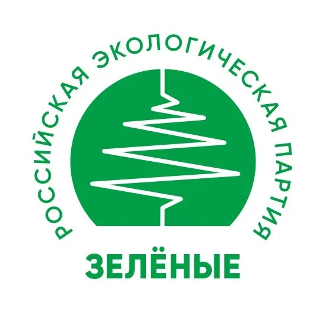
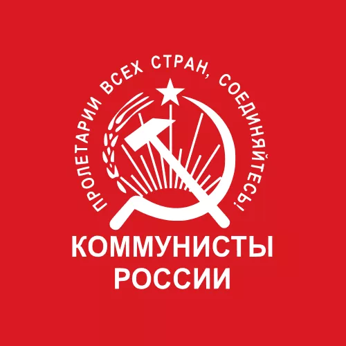
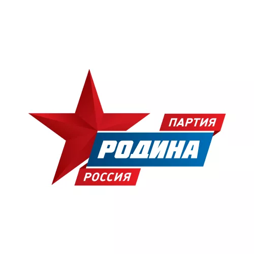
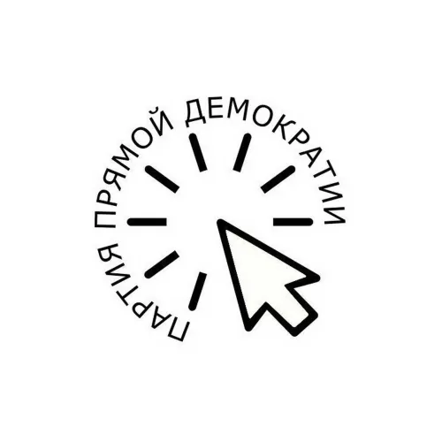

Сохранить Голос
Выборы прошли
Первые результаты голосования.
Следите за обновлениями в наших соцсетях. Если вы столкнулись с нарушениями — напишите нам.
Заявление проекта «Сохранить голос»
Мы не признаём эти выборы честными
Наша позиция однозначна: мы считаем эти выборы полностью сфальсифицированными в интересах «Единой России» — партии жуликов и воров. Мы не считаем опубликованные цифры достоверным отражением воли избирателей.
Мы считаем, что из-за фальсификаций многие голоса, отданные за кандидатов, рекомендованных «Умным голосованием», не были засчитаны. Мы убеждены, что у избирателей украли их голоса, а вместе с ними — право влиять на будущее страны.
Публикуя результаты, мы не признаём их честность и не соглашаемся с ними. Мы показываем объявленные цифры, чтобы они оставались на виду. Наша оценка этих выборов от этого не меняется.
Ваш голос принадлежит вам. Ни одна партия не имеет права его присваивать.
Госдума · 18–20 сентября 2026
Результаты выборов
По партийным спискам
Доля голосов, %
Проходят по спискам 5% и выше
-

Единая Россия 57,96% -

КПРФ 13,67% -

ЛДПР 8,96% -

Новые люди 7,91% -

Справедливая Россия 5,10%
Не проходят по спискам Менее 5%
-

Партия пенсионеров 1,97% -

Зелёные 1,15% -

Коммунисты России 0,85% -

Родина 0,71% -

Партия прямой демократии 0,35%
Разделение предварительное и касается только партийных списков. По данным источника, «Родина» также получает одно место по одномандатному округу.
Данные на из таблицы результатов по федеральным партийным спискам в публикации KP.RU . Обновление на сайте — вручную.
Соцсети